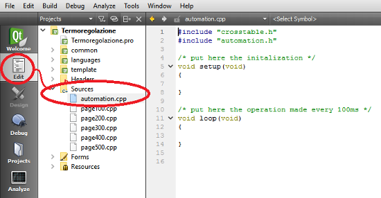
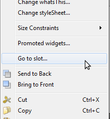
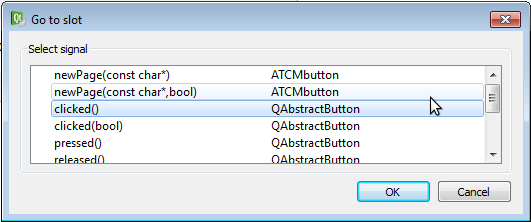
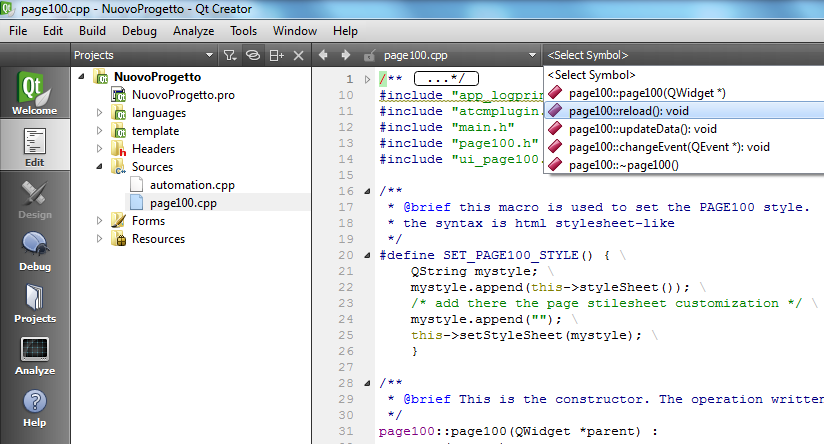

Fulfilment of an automation with graphic can be done in 2 ways:
Write C++ code in QT environment
Write PLC languages code in ATCM Control environment (5 languages)
In both cases dialog between graphics and automation is happened via Crosstable.
Even though it is not necessary to write C++ code, it is possible to do, for instance: if you desire to change directly some PLC variables in the HMI application.
NOTE: usually this is done in the PLC application.
Qt automation can be done for the entire project or for each single page.
To write a variable in C++ call doWrite_VariableName(value), where VariableName is the name of the variable in the Crosstable and value the value to write.
For example to configure as output the first digital I/O:
doWrite_PLC_DigDir_1(1);
To set the first analogue output to the value of the product of the first 2 inputs write:
doWrite_PLC_AnOut_1(PLC_AnIn_1 * PLC_AnIn_2);
WHOLE PROJECT
It is possible to write the application only using C++ code; to do so use the page automation.cpp presente in Edit → Sources

This page is splitted in 2 parts: setup() and loop()
setup() function is run only at application startup and the loop() function runs every 100ms independently of the page shown.
SINGLE PAGE
To write an automation in QT for a single page follows these 3 steps:
Define the triggering action for the automation: time, threshold, a key on, etc...
Link previous trigger to the function with automation code.
Write automation code in the function.
Here an example to change 2 bits with a button on.
First link button to the automation function (in Qt known as slot) to the button on (in Qt known as signal).
To do this click right key on button and choose “go to slot” and select in the list signal “clicked”. A window with an empty automation function appears.


If you see the following window:
Make a “Build All”, close project with File → “Close All Projects and Editors”. When the project is opened again the error windows disappears.
/* this funcion will flip the actual value of DigOut01, DigOut02, DigOut03 and DigOut04 */
void page01::on_atcmButton_5_clicked()
{
/***********
* DigOut01 *
************/
/* flip the value */
doWrite_DigOut01(!DigOut01);
/***********
* DigOut02 *
************/
/* flip the value */
doWrite_DigOut02(!DigOut02);
}
Source code can be linked to each page in different ways:
in the reload(), method, called when page is shown on display;
in the updateData(), method, called every 500 ms when the page is visible;
